Photography
We thought we would share some meaningful pictures from the time we started dating to present time
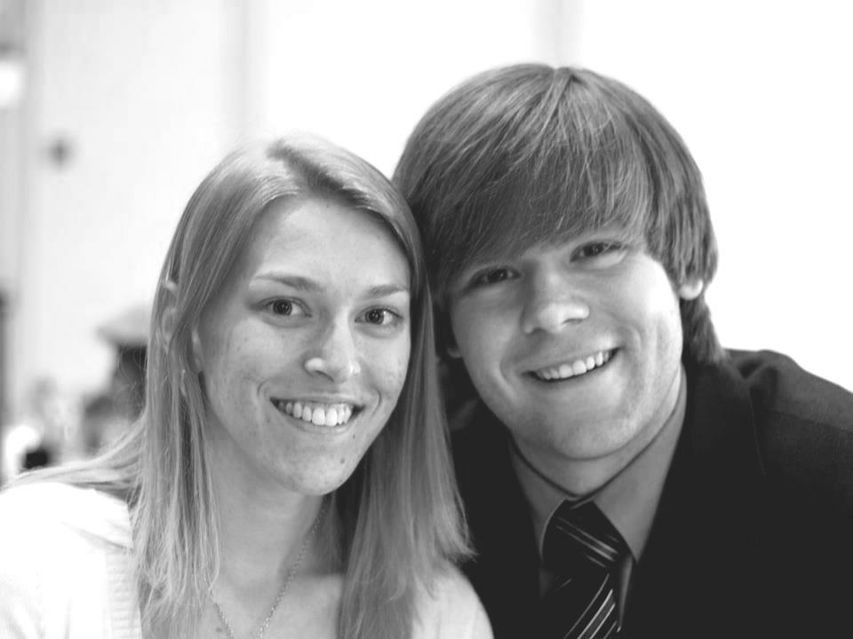 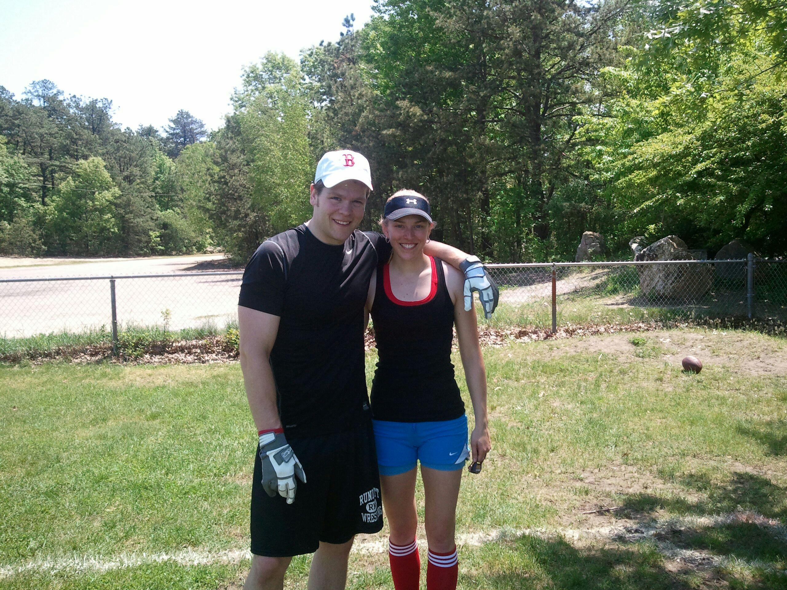
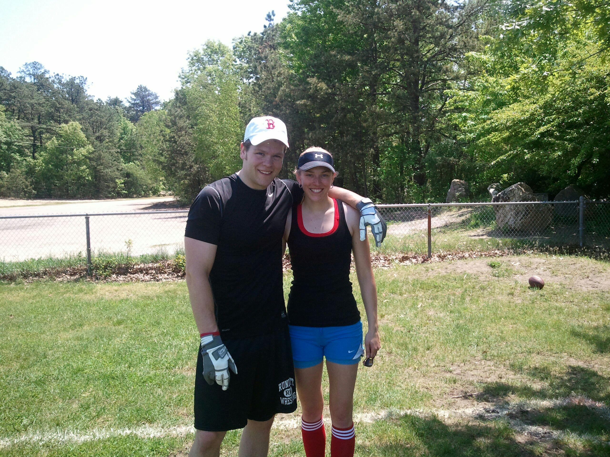
 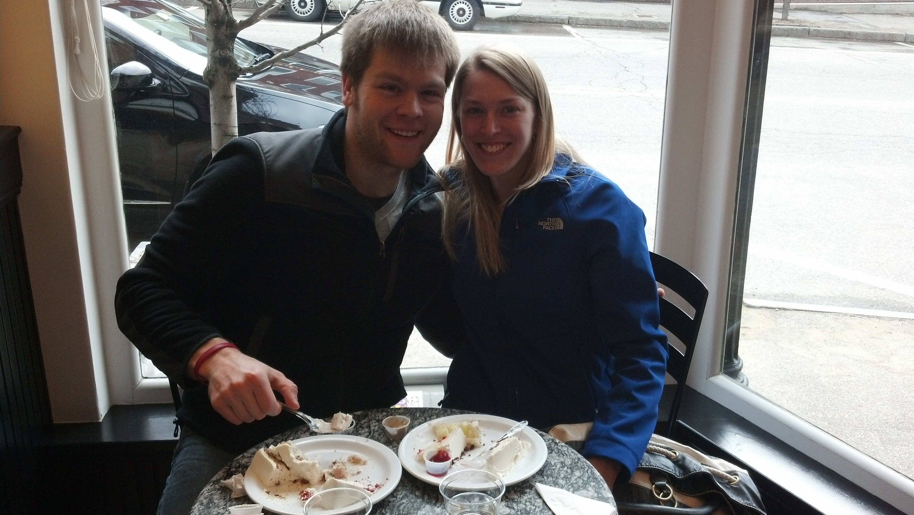
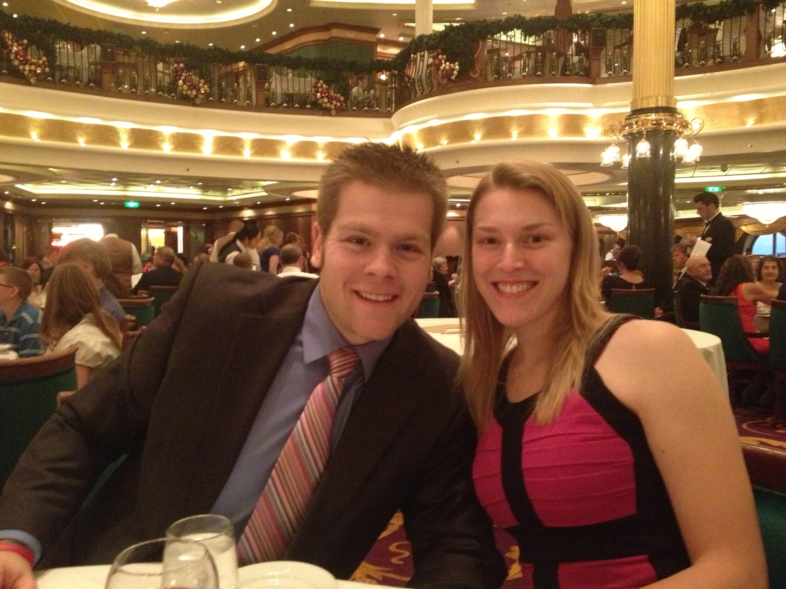
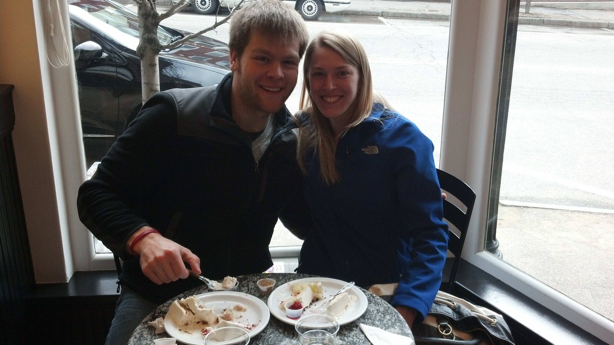
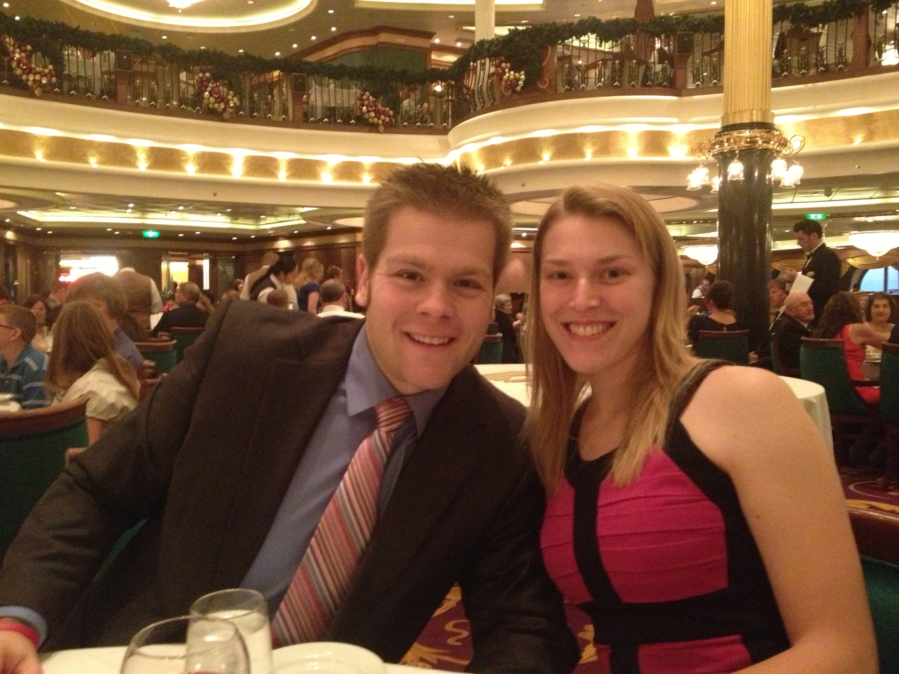
Thank you for visiting our wedding website! We look forward to the fantastic day and wanted to provide some information about the upcoming festivities. Thanks in advance to all of our friends and family who will be supporting us as we take the next step in our lives as husband and wife. We love you all!
- Chelsea & Ben
HOW WE MET: Ben and I met for the first time in the Fall of 2006 at the University of New Hampshire, when I was a Freshman and Ben was a Senior. We became acquaintances, brought together by mutual friends, and continued to run into each other at social gatherings over the next few years. On the morning of my 23rd birthday (October 2010), Ben, a few of our friends and I went out to breakfast in Portsmouth. Ben mentioned that we should all get together again soon, and while making sure he had everyone's phone number to organize the next get-together, he "casually" realized that he did not have my phone number. I provided it happily when he requested it. I would say that was when our relationship took a turn from purely platonic to flirtatious.
OUR FIRST DATE: After several long phone conversations, it became obvious that we were really crushing on each other. Ben asked me out on a date a few weeks later, and of course I accepted his offer. He came to pick me up at my parents' house in Holden with a beautiful bouquet of flowers (major points!) and took me down to Cambridge for dinner, dancing, and drinks. We built our first memories as a couple that night over Thai food and an attempt at Salsa dancing in Harvard Square. He held my hand as we walked from dinner over to the dance club, and I was delighted at the way his hand fit so perfectly with mine. The night continued as we enjoyed some drinks at another pub just down the street from the Salsa dance club. We heard a live band playing and decided to check them out (but I think it was more about not wanting the night to be over just yet - we were having way too much fun to go home!). Eventually it came to closing time and we had to start heading home. Ben and I held hands in the car all the way back to Holden. When he dropped me off at my parent's house, he got out of the car and gave me a good-night hug. What a gentleman! (Extra points!)
OUR FIRST KISS: The very next weekend our friends Aaron and Sam Limoges were hosting a Patriots game get-together, which both Ben and I attended. We were very flirtatious with each other all day. After the game, Ben walked me to my car to say goodbye and said he wanted to see me again real soon. He looked into my eyes, took a step towards me and kissed me for the very first time. We've been inseparable ever since.
WHERE WE ARE NOW: Ben and I currently live together in an apartment in downtown Concord, NH. Ben is currently working as a Behavior Specialist for Autistic students at Winnesquam Regional High School. He has been taking Computer Programming/Software Development courses for the past year and a half and will be making a career change in the Fall into the technology industry. I am working at Southern New Hampshire University as an Academic Advisor for the College of Online and Continuing Education. We are very much so looking forward to building our lives together and are tremendously excited to be celebrating this joyous occasion with all of our friends and family! Thank you for all of your love and support!
Gorgeous blonde says yes to a date, a kiss and eventually to spending the rest of her life with me. I guess I am quite charming. You should come to our wedding and help us celebrate!
The ceremony and reception will both be held at the Wentworth by the Sea on November 10, 2013. The ceremony will take place in the Garden Ballroom at 3:30pm with reception to follow.
Victoria Gancarz, sister of the groom
Mackenzie Brower
The Wentworth By The Sea
588 Wentworth Road
New Castle, NH 03854
(603) 422-7322
Special rate available until September 1, 2013.
Lee Waldvogel, friend of the groom
*Also one of the groomsmen*
Nick Schaefer, brother of the groom
Jonathan Gancarz & Jacob Gancarz
Your presence at our wedding, your good wishes and thoughts are the most memorable and thoughtful gift you could give us.
We realize that some might want to give an additonal gift to help us build our home and continue our journey together. We have gift registries at Amazon.com and Macy's. Please also consider donating to the Alzheimer's Foundation of America in celebration of our wedding and in honor of our family members who have suffered from this disease.
We thought we would share some meaningful pictures from the time we started dating to present time
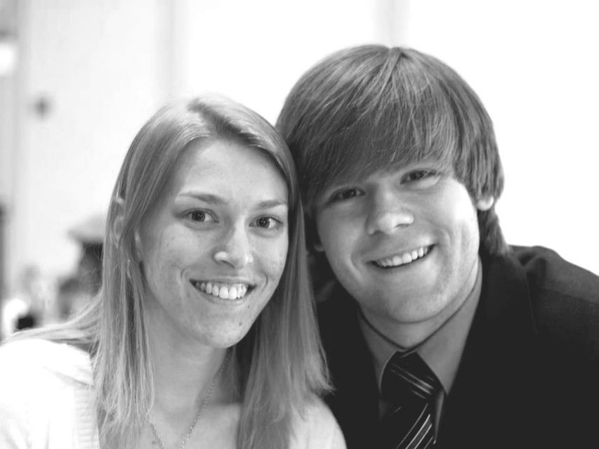
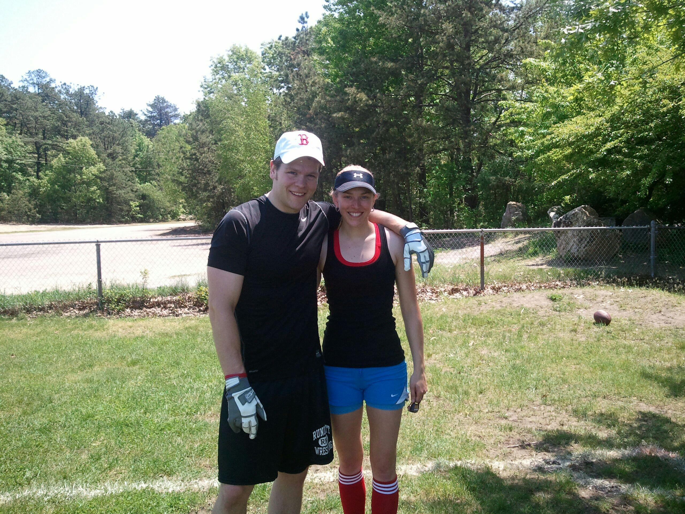
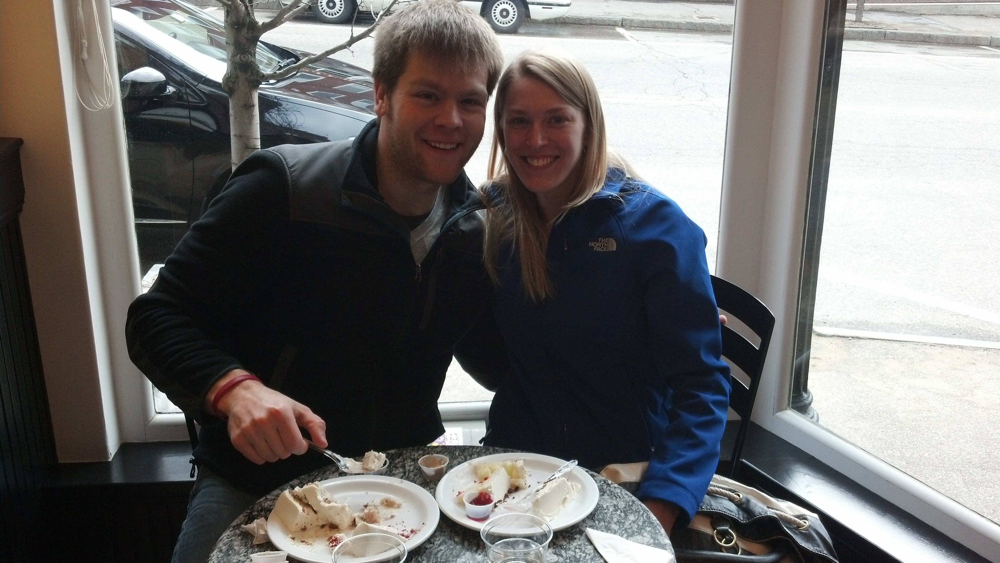
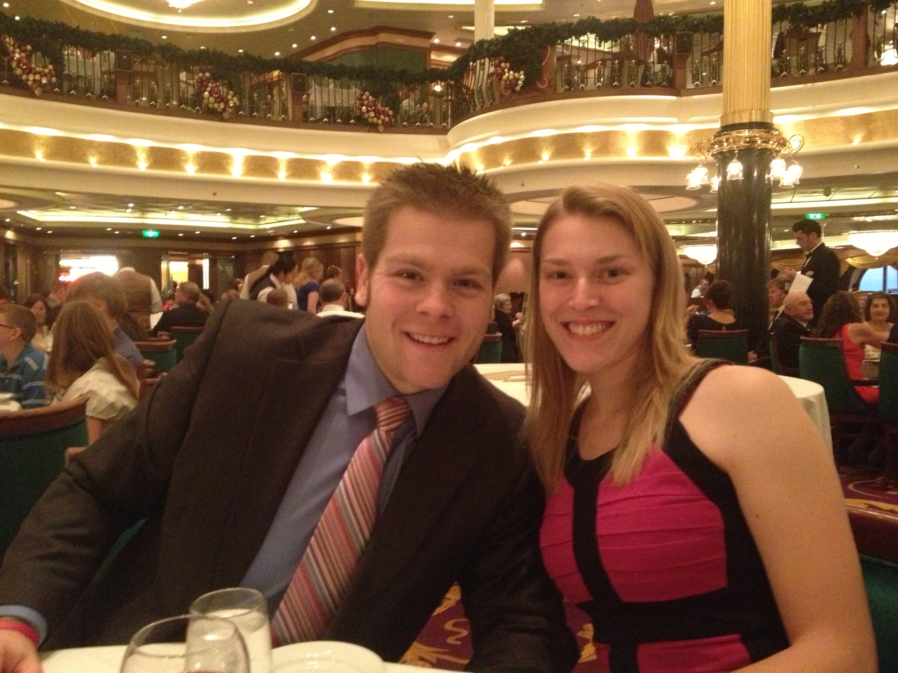